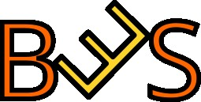

Dobrodošli na zvanični sajt Beočić eSport organizacije!
Dobrodošli na zvanični sajt Beočić eSporta! Mi smo poluprofesionalna eSport organizacija koja pre svega u svom timu sadrži prave ljubitelje eSporta a i gejminga uopšte, a zatim i prave profesionalce i ozbiljne eSportaše. U ovom članku možete videti neke osnovne podatke o organizaciji, o mestu gde je organizacija osnovana (i po kome nosi ime), kao i to ko čini našu organizaciju i u kojim igrama su naši članovi nastupali ili i dalje nastupaju.
